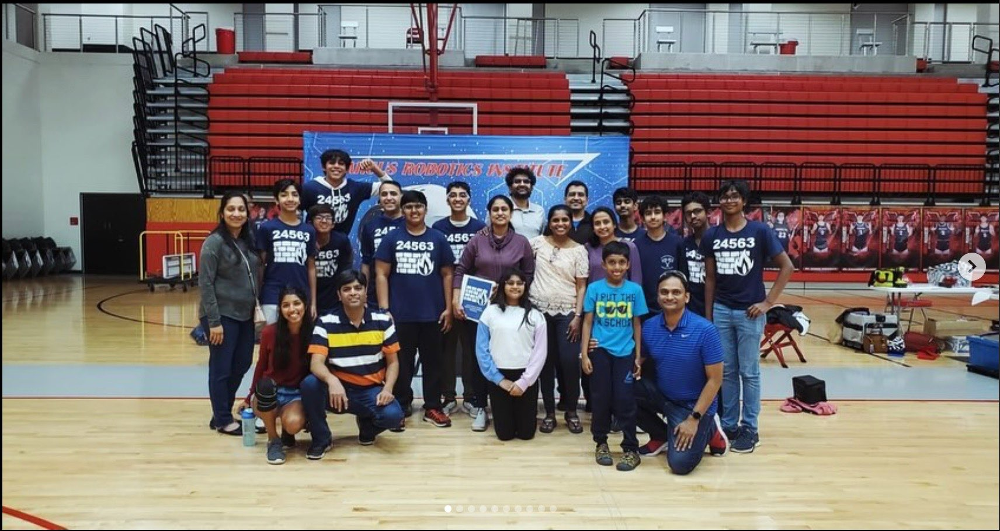

Our Mission
To educate ourselves and empower students to explore their passions
for stem through hands-on experience in the design, construction, and
programming of robots. We aim to foster teamwork, creativity, and
problem-solving skills while promoting community outreach and stem
education. Aswell as, By fostering personal growth, sparking
competitiveness, and developing the leaders of tomorrow, the Flower
Mound High School Technology Club's mission is to educate, innovate,
and inspire students to grow in the field of STEM.